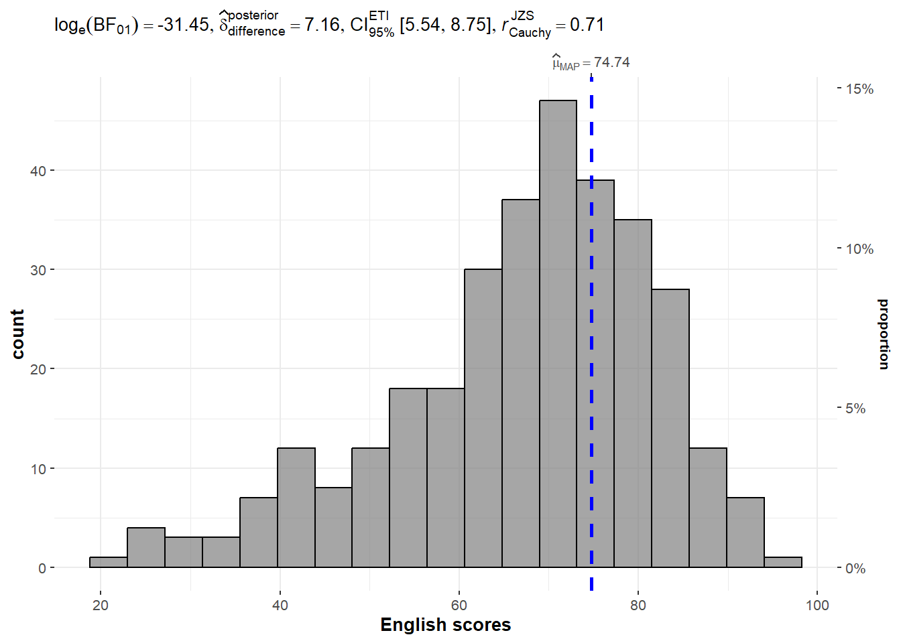
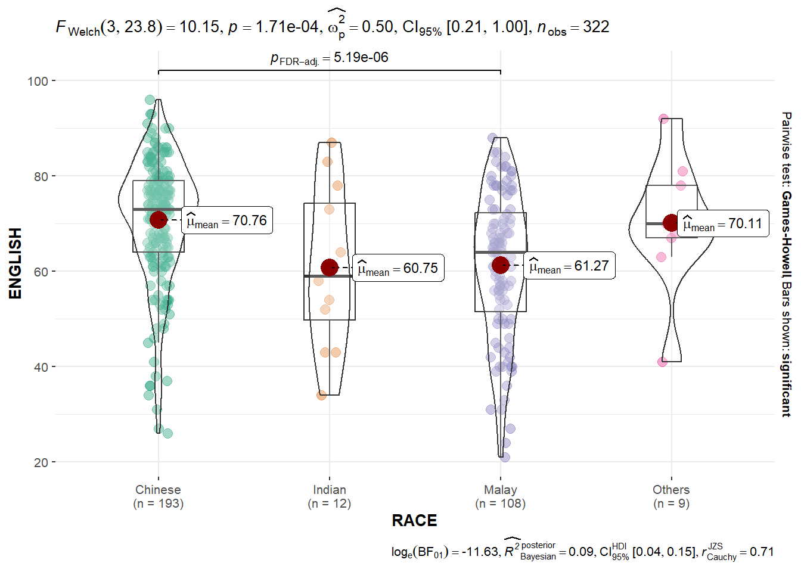
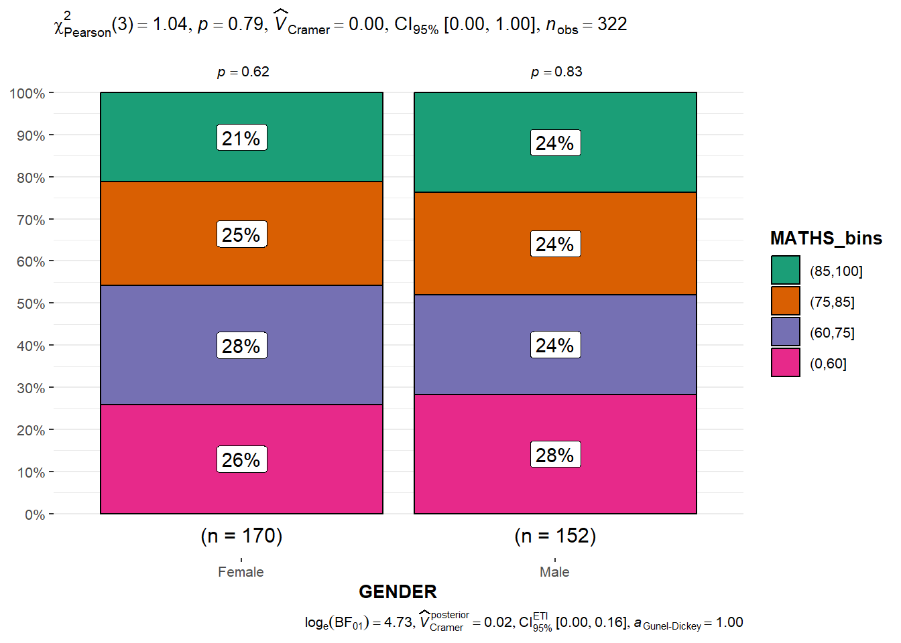

pacman::p_load(tidyverse, ggstatsplot)
pacman::p_load(readxl, performance, parameters, see)Hands-on Exercise 4b: Visual Statistical Analysis
1 Overview
This exercise aims to
- Gain hands-on experience in visual statistical analysis using:
 ggstatsplot package to create visual graphics with rich statistical information.
ggstatsplot package to create visual graphics with rich statistical information. - Visualise model diagnostics and model parameters using performance and parameters packages.
2 Getting Started
2.1 Installing and loading the packages
For this exercise, the following R packages will be used, they are:
tidyverse, a family of R packages for data science processes,ggstatsplotis an extension of ggplot2 package for creating graphics with details from statistical tests in the information-rich plots themselves.
2.2 Data import
The following datasets are used for this exercise.
- Toyota Corolla case study will be used. The purpose of the study is to build a model to discover factors affecting the prices of used cars by taking into consideration a set of explanatory variables.
exam_data <- read_csv("data/Exam_data.csv")
exam_data# A tibble: 322 × 7
ID CLASS GENDER RACE ENGLISH MATHS SCIENCE
<chr> <chr> <chr> <chr> <dbl> <dbl> <dbl>
1 Student321 3I Male Malay 21 9 15
2 Student305 3I Female Malay 24 22 16
3 Student289 3H Male Chinese 26 16 16
4 Student227 3F Male Chinese 27 77 31
5 Student318 3I Male Malay 27 11 25
6 Student306 3I Female Malay 31 16 16
7 Student313 3I Male Chinese 31 21 25
8 Student316 3I Male Malay 31 18 27
9 Student312 3I Male Malay 33 19 15
10 Student297 3H Male Indian 34 49 37
# ℹ 312 more rowscar_resale <- read_xls("data/ToyotaCorolla.xls", "data")
car_resale# A tibble: 1,436 × 38
Id Model Price Age_08_04 Mfg_Month Mfg_Year KM Quarterly_Tax Weight
<dbl> <chr> <dbl> <dbl> <dbl> <dbl> <dbl> <dbl> <dbl>
1 81 TOYOTA … 18950 25 8 2002 20019 100 1180
2 1 TOYOTA … 13500 23 10 2002 46986 210 1165
3 2 TOYOTA … 13750 23 10 2002 72937 210 1165
4 3 TOYOTA… 13950 24 9 2002 41711 210 1165
5 4 TOYOTA … 14950 26 7 2002 48000 210 1165
6 5 TOYOTA … 13750 30 3 2002 38500 210 1170
7 6 TOYOTA … 12950 32 1 2002 61000 210 1170
8 7 TOYOTA… 16900 27 6 2002 94612 210 1245
9 8 TOYOTA … 18600 30 3 2002 75889 210 1245
10 44 TOYOTA … 16950 27 6 2002 110404 234 1255
# ℹ 1,426 more rows
# ℹ 29 more variables: Guarantee_Period <dbl>, HP_Bin <chr>, CC_bin <chr>,
# Doors <dbl>, Gears <dbl>, Cylinders <dbl>, Fuel_Type <chr>, Color <chr>,
# Met_Color <dbl>, Automatic <dbl>, Mfr_Guarantee <dbl>,
# BOVAG_Guarantee <dbl>, ABS <dbl>, Airbag_1 <dbl>, Airbag_2 <dbl>,
# Airco <dbl>, Automatic_airco <dbl>, Boardcomputer <dbl>, CD_Player <dbl>,
# Central_Lock <dbl>, Powered_Windows <dbl>, Power_Steering <dbl>, …3 Visual Statistical Analysis
3.1 One-sample test
gghistostats() produces a histogram with statistical details from a one-sample test included in the plot as a subtitle.
What is Bayes Factor?
A Bayes factor is the ratio of the likelihood of an alternate hypothesis (BF10) to the likelihood of the null hypothesis (BF01). It can be interpreted as a measure of the strength of evidence in favour of one theory among two competing theories.
It can be any positive number.
It gives us a way to evaluate the data in favour of a null hypothesis and to use external information to do so. It tells us what the weight of the evidence is in favour of a given hypothesis.
The Schwarz criterion is one of the easiest ways to calculate a rough approximation of the Bayes Factor.
Show the code
set.seed(1234)
gghistostats(data = exam_data,
x = ENGLISH,
type = "bayes",
test.value = 60,
xlab = "English scores")
3.2 Two-sample mean test
ggbetweenstats() is used to build a visual for a two-sample mean test of Maths scores by gender as shown below.
Show the code
ggbetweenstats(data = exam_data,
x = GENDER,
y = MATHS,
type = "np",
messages = FALSE)
3.3 One-way ANOVA Test
ggbetweenstats() is used to build a visual for a one-way ANOVA test on English scores by race as shown below.
Show the code
ggbetweenstats(data = exam_data,
x = RACE,
y = ENGLISH,
type = "p",
mean.ci = TRUE,
pairwise.comparisons = TRUE,
pairwise.display = "s",
p.adjust.method = "fdr",
messages = FALSE)
Note
For pairwise.display options:
“ns” → only non-significant
“s” → only significant
“all” → everything
3.4 Significant Test of Correlation
ggscatterstats() is used to build a visual for a significant Test of Correlation between Maths scores and English scores as shown below.
Show the code
ggscatterstats(data = exam_data,
x = MATHS,
y = ENGLISH,
marginal = FALSE)
3.5 Significant Test of Association (Dependence)
The Maths scores are binned into a 4-class variable by using cut() and then ggbarstats() is used to build a visual for the significant Test of Association.
Show the code
exam_math <- exam_data %>%
mutate(MATHS_bins = cut(MATHS, breaks = c(0,60,75,85,100)))
ggbarstats(exam_math,
x = MATHS_bins,
y = GENDER)
4 Visualising Models
The Toyota Corolla case study will be used. The purpose of the study is to build a model to discover factors affecting the prices of used-cars by taking into consideration a set of explanatory variables.
4.1 Multiple Regression Model
The following is used to calibrate a multiple linear regression model by using lm() of Base Stats of R.
model <- lm(Price ~ Age_08_04 + Mfg_Year + KM +
Weight + Guarantee_Period, data = car_resale)
model
Call:
lm(formula = Price ~ Age_08_04 + Mfg_Year + KM + Weight + Guarantee_Period,
data = car_resale)
Coefficients:
(Intercept) Age_08_04 Mfg_Year KM
-2.637e+06 -1.409e+01 1.315e+03 -2.323e-02
Weight Guarantee_Period
1.903e+01 2.770e+01 4.2 Model Diagnostic - check for multicollinearity
We use check_collinearity() of performance package to check for multicollinearity.
check_c <- check_collinearity(model)
check_c# Check for Multicollinearity
Low Correlation
Term VIF VIF 95% CI Increased SE Tolerance Tolerance 95% CI
KM 1.46 [ 1.37, 1.57] 1.21 0.68 [0.64, 0.73]
Weight 1.41 [ 1.32, 1.51] 1.19 0.71 [0.66, 0.76]
Guarantee_Period 1.04 [ 1.01, 1.17] 1.02 0.97 [0.86, 0.99]
High Correlation
Term VIF VIF 95% CI Increased SE Tolerance Tolerance 95% CI
Age_08_04 31.07 [28.08, 34.38] 5.57 0.03 [0.03, 0.04]
Mfg_Year 31.16 [28.16, 34.48] 5.58 0.03 [0.03, 0.04]plot(check_c)
4.3 Model Diagnostic - check normality assumption
We use check_normality() of performance package to check normality assumption.
model1 <- lm(Price ~ Age_08_04 + KM +
Weight + Guarantee_Period, data = car_resale)
check_n <- check_normality(model1)
plot(check_n)
4.4 Model Diagnostic - Check homogeneity of variances assumption
We use check_heteroscedasticity() of performance package.
check_h <- check_heteroscedasticity(model1)
plot(check_h)
4.5 Model Diagnostic - Complete check
We can also perform the complete model diagnostic by using check_model().
check_model(model1)
4.6 Visualising Regression Parameters
We use plot() of see package and parameters() of parameters package to visualise the parameters of a regression model.
plot(parameters(model1))
We use ggcoefstats() of ggstatsplot package to visualise the parameters of a regression model.
ggcoefstats(model1,
output = "plot")